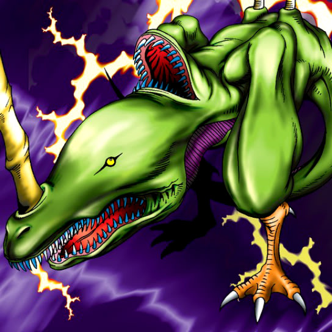

Two-Mouth Darkruler

STATS
ATK: 900
DEF: 700DECK COST
Deck Cost per Card: 16Fusion List (6 Possible Fusions)
- Two-Mouth Darkruler + Bat = Cyber Saurus
- Two-Mouth Darkruler + Larvae Moth = Sword Arm of Dragon
- Two-Mouth Darkruler + M-Warrior #2 = Sword Arm of Dragon
- Two-Mouth Darkruler + Mechanical Snail = Cyber Saurus
- Two-Mouth Darkruler + Petit Moth = Sword Arm of Dragon
- Two-Mouth Darkruler + Steel Scorpion = Cyber Saurus